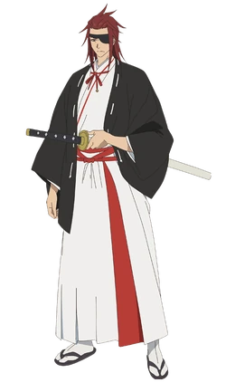

Hell's Paradise (地獄楽, Hell's Paradise: Jigokuraku?) est un shōnen manga écrit et dessiné par Yūji Kaku.
Il est prépublié du 22 janvier 2018 au 25 janvier 2021 dans le Shōnen Jump+, puis publié en volumes
reliés en un total de 13 volumes par l'éditeur japonais Shūeisha. La version française est éditée par
Kazé du 13 mars 2019 au 25 août 2021.
Une adaptation en série télévisée d'animation produite par le studio japonais MAPPA est diffusée d'avril
2023 à juillet 2023. En France, la version originale sous-titrée est diffusée les mercredis soir depuis
le 12 avril 2023 sur la case J+1 de la chaine J-One. Une saison 2 est annoncée.
Synopsis
L'histoire se déroule au XIe siècle, au Japon.
Gabimaru, « Le Néant », le plus célèbre et puissant des ninjas-assassins a été capturé et croupit en
prison. Affirmant n'avoir plus aucune raison de vivre, il attend désespérément qu'un bourreau parvienne
à lui ôter la vie car son entraînement surhumain lui permet de résister aux pires des châtiments. C'est
alors qu'il reçoit la visite d'un exécuteur pas comme les autres : une puissante manieuse de sabre et
trancheuse de tête. Après un âpre combat dont il réchappe de peu, celle-ci le pousse dans ses
retranchements. En échange de la vie sauve, elle lui propose un marché : il devra se rendre sur une île
mystérieuse afin de récupérer un élixir d'immortalité. Seul problème : tous ceux qui se sont rendus sur
cette île sont revenus découpés en morceaux...
LE PERSONNAGE PRINCIPAL
Gabimaru (画眉丸)
Il s'agit du ninja le plus puissant d'Iwagakure, où il a été entraîné à tuer depuis sa naissance. Il est
connu sous le nom de Gabimaru « Le Vide » pour son manque d'émotion pendant son travail macabre. Il est
cependant très amoureux de sa femme, la fille du chef du village, qui le traite différemment de tous les
autres en raison de sa nature pacifique. Prévoyant de couper les liens avec le village pour vivre une vie
normale avec sa femme, il est piégé par ses camarades et capturé.
LES PERSONNAGES SECONDAIRES
Yamada Asaemon Sagiri (山田浅ェ門佐切)
LSagiri est la douzième exécutrice de l'école du Coup Unique.
Elle porte la tenue classique des Asaemon soit une tenue blanche en signe de condoléance vis-à-vis des
criminels qu'elle exécute ainsi qu'une clochette funéraire accrochée à sa poitrine. Elle porte également un
plastron en forme de corsets.
Comme chaque exécuteurs, elle est chargée de surveiller un condamné durant l'expédition dans le "paradis".
Son condamné est le shinobi Gabimaru. Un shinobi qui a survécu à différentes exécutions qui n'ont eu aucun
effet. Après en avoir appris d'avantage sur ce dernier, elle le choisis pour l'expédition dans le "paradis".

Yamada Asaemon Eizen (山田浅ェ門衛えい善ぜん)
Eizen est le premier exécuteur de l'école du Coup Unique.
Il porte la tenue classique des Asaemon.
Lors du rassemblement des criminels devant le shogun pour leur annoncer la condition de leur libération, il
suggéra à
Sagiri de rester à l'écart pour mener une vie paisible. Ce que l'exécutrice refusa.
Lors du grand départ vers le "paradis", il fut désigné pour être le surveillant du géant Rokurôta.
Tamiya Gantetsusai (民たみ谷や 巌がん鉄てつ斎さい)
Gantetsusai est un expert en sabre surnommé "Kenryû" ou encore l'"Invincible de Hasshû".
Il est un des criminels participant à l'expédition pour le "paradis" dans le but de trouver et amener un
élixir
d'immortalité au shogun afin d'être gracié.
Il est placé sous la surveillance de l'exécuteur Fuchi.
Tamiya Gantetsusai (民たみ谷や 巌がん鉄てつ斎さい)
Yuzuriha est une kunoichi placée sous la surveillance de Senta pour l'expédition dans le "paradis".
Elle porte un hakama court et une protection à son bras gauche. Elle porte des tabi utilisés comme des
jambières.
Ses kunaï sont rangés au niveau de ses épaules et porte un long wakizashi au niveau de la taille.
Nurugai (ヌルガイ)
C'est le dernier membre du peuple Sanka. Nurugai a été condamnée à mort après avoir accidentellement attiré
des
samouraïs dans son village, car les Sanka étaient un symbole de rébellion contre le shogun. Malgré son
apparence et son
comportement trompeur, il s'agit d'une fille.